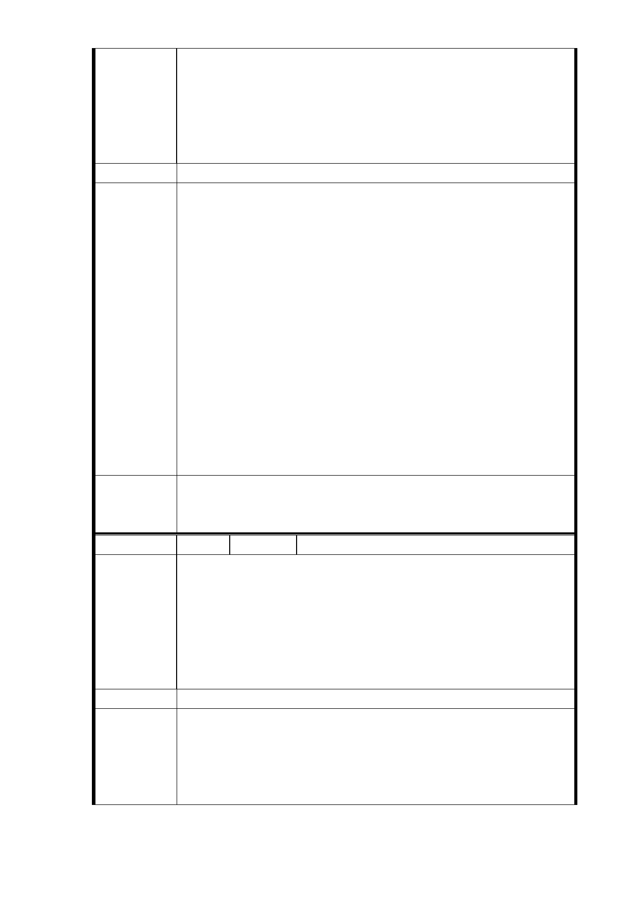

根據 103 年 2 月 21 日第五次專案審查會議有人建議 R04 南側
整區聯合開發或排除中間 7 層樓。說已經取得大部份住戶意
陳情理由
願，但根據整合委員名冊，B 區塊信義路 6 段 60 號至 72 號
地主，也只有少數幾戶同意開發，反而 A＋C 區塊比較多戶同
意聯合開發。所以本地主還是主張如下（綜理表編號 17-1）
之陳情。
建議辦法
一、本市都市計畫委員會103年2月21日召開信義線東延段都
市計畫變更案第5次專案小組審查意見略以：
1.本案用地變更部分同意依市府捷運局於簡報中所擬建
議，即…『R04站南側捷二用地，維持公展範圍（基地面
積3,328㎡），並辦理土地開發』、…續提委員會（大會）
市府回應
審議。
意 見 2.有關R04站南側捷二用地維持公展範圍並辦理土地開發
一項，針對該範圍內七層樓建物納入聯合開發之必要性
及不納入聯合開發未來辦理都市更新之限制等問題，請
捷運局持續與陳情人溝通協調。
二、捷運工程局已於 103 年 3 月 25 日再邀集 7 層樓建物之土
地所有權人召開協調會議，有關本案用地範圍，仍應依都
市計畫委員會決議辦理。
委員會決
議
一、R04 站南側捷二用地，維持公展範圍（基地面積 3,328
㎡），並辦理土地開發。
二、同「市府回應意見」。
編 號 17-3 陳情人 賴永章（R04 捷二）
對於捷運信義線東延段 R04 站南北兩側捷運出口無法進行聯
開的問題（北側土地產權有問題，南側聯開無法符合大多數
地主的認同，加上中央與地方財政困難），本人建議停止 R04
陳 情 理 由 站聯開案，可於松德路與信義路五段路口兩側，加設象山站
4 號與 5 號出口（北市警察局婦女隊外面與對側）因為是公
有地實施較為容易，經費也比較節省。即使無 R04 站，亦可
受惠松友與安康里的里民。
建議辦法
捷運信義線東延段 R04 站南北兩側（捷一。捷二）土地開發
市府回應
意見
基地，經 103 年 2 月 21 日臺北市都市計畫委員會第 5 次專案
小組審查意見：「本案用地變更部分同意依市府捷運局於簡報
中所擬建議，即『R04 站北側捷一用地，採設置捷運必要設
施出入口最小用地面積 510 ㎡之替代方案取得用地，並辦理
- 68 -